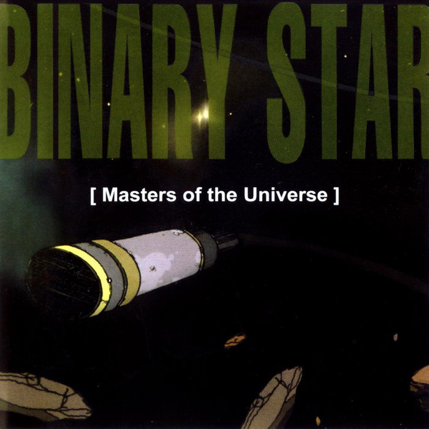

Music that I enjoy
My thoughts on many new albums from the last year or so can be found in my reviews on The Michigan Daily, but here are three albums I really love that I've never had the opportunity to talk about in writing.
Binary Star - Masters of the Universe
This album is an underground hip hop masterpiece. It's got timeless beats and solid flows and for although it was released in 2000, it feels very old-school, very '90s, but still extremely fresh and exciting to listen to today. My favorite tracks are "Reality Check" and "Honest Expression."

Daft Punk - Discovery
I wasn't a huge electronic music fan when I first heard this album but it made me reconsider the potential for the genre. In much of electronic music's history the album format has not been as heavily championed as the single, but Discovery is an experience. It might be my favorite album of all time, and I couldn't pick a single favorite.
Kero Kero Bonito - Time 'N' Place
If Discovery is my favorite album of all time, then Time 'N' Place is probably my favorite album right now. It dominated my Spotify Wrapped of 2019. I just really love the playful, fun, but also emotional indie rock sound. My favorite track is "Time Today."